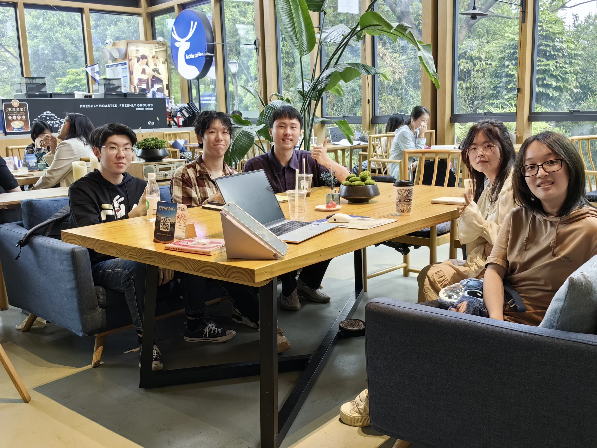
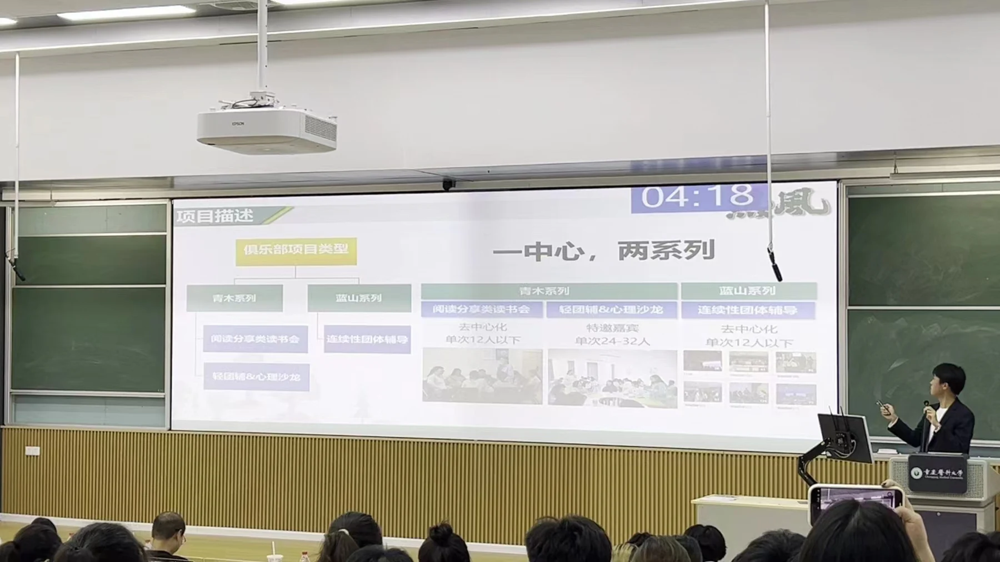

Start with a reading salon
I started Hotwind to offer university students a more open space to read, exchange ideas and meet beyond formal coursework.
Begin with a need you can see.OUR STORY
The story of building Hotwind is also a story of listening, testing ideas and learning to change direction.
WHY I STARTED
I started Hotwind to offer university students a more open space to read, exchange ideas and meet beyond formal coursework.
Over time, reading became one entry point to a wider programme: public dialogue, peer learning, creative health communication and informal connection.

HOW IT EVOLVED
I started Hotwind to offer university students a more open space to read, exchange ideas and meet beyond formal coursework.
Begin with a need you can see.An innovation project became a way to explore the relationship between reading, peer support and youth development.
An early idea is something to test.After reviewing early ideas about peer support, we refocused the community on reading, discussion and public engagement. Peer exchange remained distinct from professional psychological services.
Listening also means changing direction.We explored contacts with academic, cultural, public-interest and life-science groups in Chongqing and Wuhan.
Build connections around shared questions.
A TURNING POINT
The early innovation-project stage explored ideas about reading and peer support. The revised scope focused on learning, dialogue and public engagement, with a clear boundary from professional psychological services.
How we explored students’ needsOne lesson from building the community was to test ideas, listen to feedback and adapt when a plan needed to change.
Jiangkun Xiong · Personal reflection